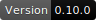
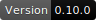
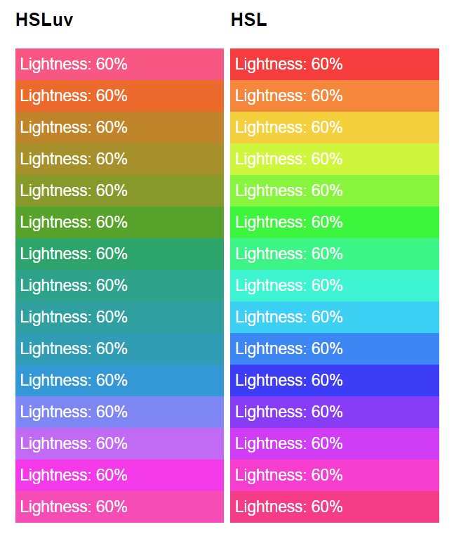

An HSLuv implementation in typescript, ported from the definitive reference Haxe version.
MIT licensed.
 

➡️ Site
An HSLuv implementation in typescript, ported from the definitive reference Haxe version.
MIT licensed.
 
➡️ Site
Chances are you already know what HSLuv (formerly aka HuSL) is if you're
here, but if not, HSLuv is a color scale meant to be easy for humans to
interpret. This package primarily exists to implement
two color spaces: HSLuv and HPLuv. However, in the process, we also
implement transformations for rgb in numeric, rgb in hex strings, hsl,
xyz, luv, and lch, as well as the lightness to y channel transform in
both directions.
What's interesting about HSLuv is that the apparent brightness is normalized.
If you've tried to pick color palettes in the regular HSL space, you've
probably noticed that at the same lightness, the colors in the blue end of the
hue appear far darker than the colors in the yellow end.
HSLuv fixes that. For any given hue, the apparent brightness of a given
lightness is meant to be simiar (using a whole bunch of complicated math and
human measurement.)
From Alexei's page,
The downside of HSLuv is that there are colors it can't represent. There is
no blue with the apparent brightness of canary yellow.
HPLuv makes these work by sacrificing saturation correctness. HPLuv will
always produce a color, but sometimes a less satisfying one than HSLuv.
npm install --save-dev hsluv_ts
import { hsluv_to_hex, hsluv_to_rgb, hex_to_hsluv } from 'hsluv_ts';
console.log( hsluv_to_hex([ 250, 50, 50 ]) );
// prints "#5c78a5"
console.log( hsluv_to_rgb([ 250, 50, 50 ]) );
// prints [ 0.35957778969721066, 0.4708793745621595, 0.6462180065016022 ]
console.log( hex_to_hsluv('#5c78a5') );
// prints [ 250.2650513570262, 49.70313649414815, 50.00687151772391 ]
The following functions are exposed.
All functions take two arguments, according to the types in their names.
rgb_to_hsluvrgb_to_hpluvhsluv_to_rgbhpluv_to_rgbhex_to_hsluvhex_to_hpluvhsluv_to_hexhpluv_to_hexlch_to_hsluvlch_to_hpluvhsluv_to_lchhpluv_to_lchrgb_to_xyzxyz_to_rgbrgb_to_lchlch_to_rgbluv_to_xyzxyz_to_luvluv_to_lchlch_to_luvl_to_yy_to_lhex_to_rgbl and y are numbers.hex is a seven-character string starting with #.
hsl and hpl are a tuple (array) of range [0;360], [0;100], [0;100]rgb is a tuple of range [0;1], [0;1], [0;1]xyz, lch, and luv are a tuple of three unbounded signed numbersThis implementation provides .d.ts for Typescript, es6 native tree-shakeable
for most work, es6 commonjs bundled for quick work, es6 iife for in-browser
learning and debugging, and es6 iife minified for bandwidth-sensitive
prepackaged deployment like CDNs. main refers to es6 cjs, and module
refers to es6 native tree-shakeable.
This implementation passed the author's 24,000 tests. By comparison to the reference implementation, calculations are accurate to within 1 in 1015, which the author says is fine.
This implementation is CI tested under Node 8,12,13 on Windows, Mac, and Ubuntu.
snake_case instead of camelCase.I made this because Typescript wasn't on the author's somewhat extensive
language list, and because the Haxe tooling wasn't very convenient under
rollup. When I was done and tried to publish, I realized someone else
already had done this, and even used
the same name I did; it was just missing from the author's list.
However, my approach to typing, packaging, and tooling is mildly different than theirs, so I'm gonna publish anyway. Besides, it's already finished (sigh 😞,) and I like some of the differences in mine between these two projects.